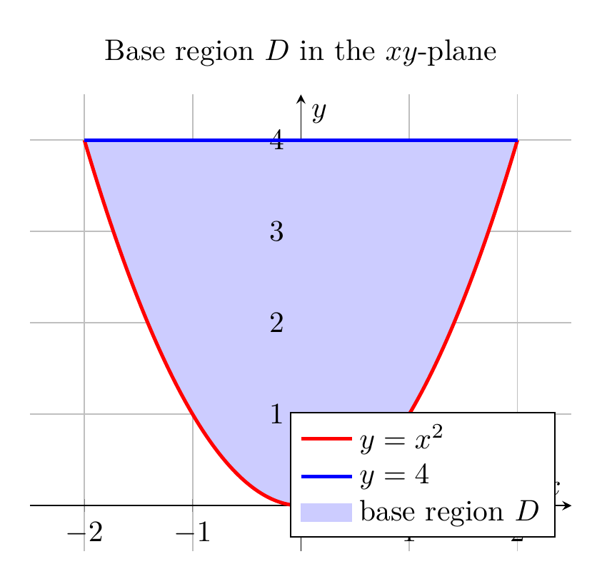
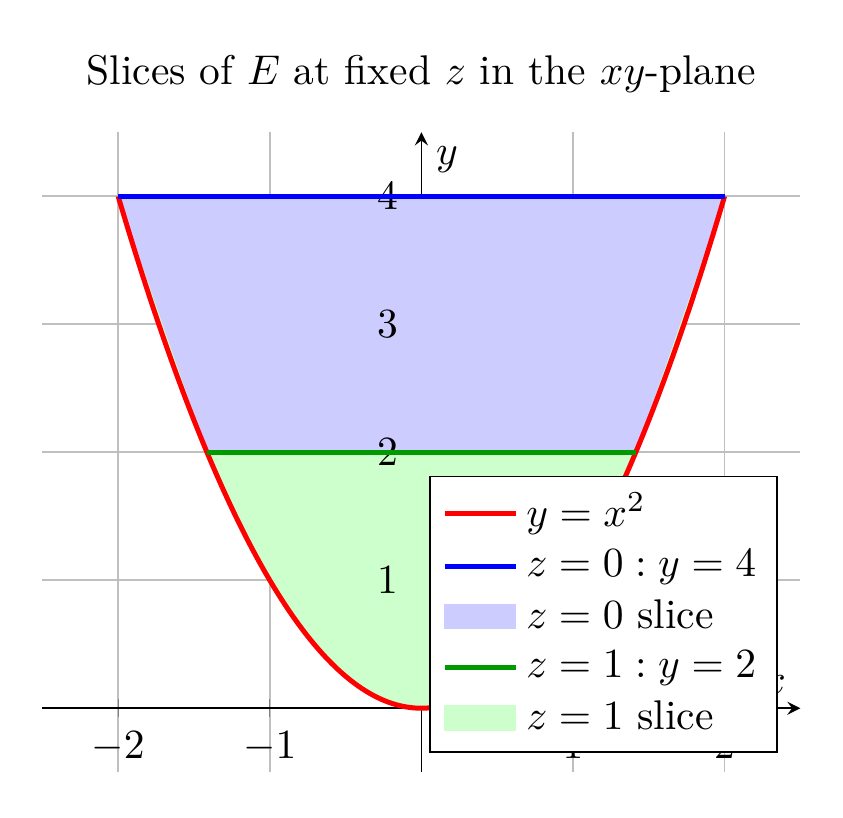

Please solve the problem in the following image.
(Image `20260928_145732_631268_utc_0800_0.png`. Alt text: Image: human_20260928_145732_631268_utc_0800)
20260928_145732_631268_utc_0800_0.png
End of problem
Answer
## Solution
The solid \(E\) is bounded by the parabolic cylinder \(y=x^2\), the plane \(z=0\), and the plane \(y+2z=4\).
Since \(y=x^2\ge0\) and \(z\ge0\), the plane \(y+2z=4\) forces \(0\le y\le4\). For a fixed \(y\in[0,4]\), the parabolic cylinder gives \(x\in[-\sqrt y,\sqrt y]\), and the two planes give \(0\le z\le 2-\frac y2\). Therefore
\[
E=\left\{(x,y,z): 0\le y\le4,\ -\sqrt y\le x\le\sqrt y,\ 0\le z\le 2-\frac y2\right\}.
\]
Equivalently, projecting onto the \(xy\)-plane,
\[
E=\left\{(x,y,z): -2\le x\le2,\ x^2\le y\le4,\ 0\le z\le 2-\frac y2\right\}.
\]
Thus the base region in the \(xy\)-plane is
\[
D=\{(x,y): -2\le x\le2,\ x^2\le y\le4\}.
\]
The 3D plot below shows the solid \(E\) and its three bounding surfaces.
---
pgfplots_0.png
---
The base region \(D\) is shown below. The following orders use this projection directly.
**Order \(dz\,dy\,dx\):** Fix \(x\in[-2,2]\). Then \(y\) runs from \(y=x^2\) to \(y=4\), and for each \(y\), \(z\) runs from \(0\) to \(2-y/2\):
\[
\int_{-2}^{2}\int_{x^2}^{4}\int_{0}^{2-y/2} f\,dz\,dy\,dx.
\]
**Order \(dz\,dx\,dy\):** Fix \(y\in[0,4]\). Then \(x\) runs from \(-\sqrt y\) to \(\sqrt y\), and \(z\) runs from \(0\) to \(2-y/2\):
\[
\int_{0}^{4}\int_{-\sqrt y}^{\sqrt y}\int_{0}^{2-y/2} f\,dz\,dx\,dy.
\]
**Order \(dx\,dz\,dy\):** Fix \(y\in[0,4]\). Then \(z\) runs from \(0\) to \(2-y/2\), and for each \(z\), \(x\) runs from \(-\sqrt y\) to \(\sqrt y\):
\[
\int_{0}^{4}\int_{0}^{2-y/2}\int_{-\sqrt y}^{\sqrt y} f\,dx\,dz\,dy.
\]
The \(x\)-bounds depend only on \(y\), so the two inner integrals can be swapped.
---
\documentclass[border=10pt]{standalone}
\usepackage{pgfplots}
\usepgfplotslibrary{fillbetween}
\pgfplotsset{compat=1.18}
\begin{document}
\begin{tikzpicture}
\begin{axis}[
width=8cm, height=7cm,
xlabel=$x$, ylabel=$y$,
xmin=-2.5, xmax=2.5,
ymin=-0.5, ymax=4.5,
axis lines=middle,
grid=both,
title={Base region $D$ in the $xy$-plane},
legend pos=south east,
legend cell align=left,
]
\addplot[name path=A, domain=-2:2, samples=200, red, very thick] {x^2};
\addlegendentry{$y=x^2$}
\addplot[name path=B, domain=-2:2, samples=2, blue, very thick] {4};
\addlegendentry{$y=4$}
\addplot[blue!20] fill between[of=A and B];
\addlegendentry{base region $D$}
\end{axis}
\end{tikzpicture}
\end{document}

pgfplots_1.png
---
**Order \(dy\,dz\,dx\):** Fix \(x\in[-2,2]\). The cross-section of \(E\) in the \(yz\)-plane is the triangle
\[
x^2\le y\le4,\qquad 0\le z\le 2-\frac y2.
\]
Its top vertex occurs when \(y=x^2\), giving \(z=2-x^2/2\). Therefore
\[
0\le z\le 2-\frac{x^2}{2},
\]
and for each such \(z\), \(y\) runs from \(x^2\) to \(4-2z\):
\[
\int_{-2}^{2}\int_{0}^{2-x^2/2}\int_{x^2}^{4-2z} f\,dy\,dz\,dx.
\]
The cross-sections at \(x=0\) and \(x=1\) are shown below.
---
pgfplots_2.png
---
**Orders with outer variable \(z\).**
Fix \(z\in[0,2]\). The slice of \(E\) in the \(xy\)-plane is
\[
x^2\le y\le4-2z,\qquad -\sqrt{4-2z}\le x\le\sqrt{4-2z}.
\]
It is bounded below by \(y=x^2\) and above by the line \(y=4-2z\).
**Order \(dy\,dx\,dz\):** Integrate \(y\) first:
\[
\int_{0}^{2}\int_{-\sqrt{4-2z}}^{\sqrt{4-2z}}\int_{x^2}^{4-2z} f\,dy\,dx\,dz.
\]
**Order \(dx\,dy\,dz\):** Integrate \(x\) first:
\[
\int_{0}^{2}\int_{0}^{4-2z}\int_{-\sqrt y}^{\sqrt y} f\,dx\,dy\,dz.
\]
The slices for \(z=0\) and \(z=1\) are shown below.
---
\documentclass[border=10pt]{standalone}
\usepackage{pgfplots}
\usepgfplotslibrary{fillbetween}
\pgfplotsset{compat=1.18}
\begin{document}
\begin{tikzpicture}
\begin{axis}[
width=8cm, height=7cm,
xlabel=$x$, ylabel=$y$,
xmin=-2.5, xmax=2.5,
ymin=-0.5, ymax=4.5,
axis lines=middle,
grid=both,
title={Slices of $E$ at fixed $z$ in the $xy$-plane},
legend pos=south east,
legend cell align=left,
]
\addplot[name path=A, domain=-2:2, samples=200, red, very thick] {x^2};
\addlegendentry{$y=x^2$}
\addplot[name path=B, domain=-2:2, samples=2, blue, very thick] {4};
\addlegendentry{$z=0: y=4$}
\addplot[blue!20] fill between[of=A and B];
\addlegendentry{$z=0$ slice}
\addplot[name path=C, domain=-1.414:1.414, samples=2, green!60!black, very thick] {2};
\addlegendentry{$z=1: y=2$}
\addplot[green!20] fill between[of=A and C];
\addlegendentry{$z=1$ slice}
\end{axis}
\end{tikzpicture}
\end{document}

pgfplots_3.png
---
**Verification.**
The volume is
\[
V=\iiint_E 1\,dV=\frac{128}{15}.
\]
All six iterated integrals give this same value. Numerically, for \(f(x,y,z)=x^2+yz\), all six orders give approximately \(11.3777778=512/45\).
**Final answer.**
\[
\boxed{
\begin{aligned}
&\int_{-2}^{2}\int_{x^2}^{4}\int_{0}^{2-y/2} f\,dz\,dy\,dx,\qquad
\int_{0}^{4}\int_{-\sqrt y}^{\sqrt y}\int_{0}^{2-y/2} f\,dz\,dx\,dy,\\[4pt]
&\int_{-2}^{2}\int_{0}^{2-x^2/2}\int_{x^2}^{4-2z} f\,dy\,dz\,dx,\qquad
\int_{0}^{2}\int_{-\sqrt{4-2z}}^{\sqrt{4-2z}}\int_{x^2}^{4-2z} f\,dy\,dx\,dz,\\[4pt]
&\int_{0}^{2}\int_{0}^{4-2z}\int_{-\sqrt y}^{\sqrt y} f\,dx\,dy\,dz,\qquad
\int_{0}^{4}\int_{0}^{2-y/2}\int_{-\sqrt y}^{\sqrt y} f\,dx\,dz\,dy,
\end{aligned}
}
\]
where \(f=f(x,y,z)\).